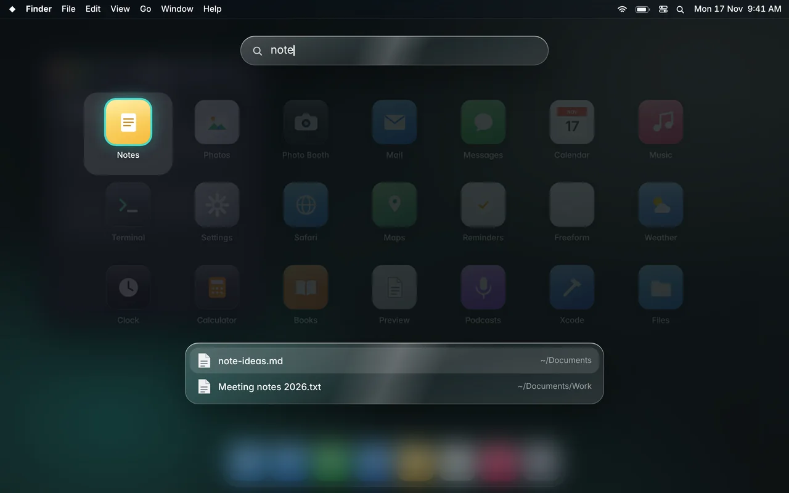

Group by class
In Edit mode, group the apps for each class into a folder. A folder holds up to nine apps.
For students
Inlet sorts your apps by category, so the school apps sit together. Put the apps for each class in a folder. Search for an essay or a PDF by a few of its words, without remembering where you saved it.
The category bar filters the grid to Create, Build, School, Everyday, Games or Other. Inlet reads the category each app declares to macOS. Education and reference apps land under School. Photo, video and music apps land under Create. Apps with no category go to Other.

Your layout is saved on your Mac, so the folders you set up on Monday are still there on Friday.
In Edit mode, group the apps for each class into a folder. A folder holds up to nine apps.
Apps run across pages. Each page keeps the layout you set, so the rest of the grid stays where it is.
In Edit mode, hide third-party apps you never use. The Hidden list brings them back to their old place.
Start typing. Files from Spotlight show under the apps, and Return opens the top hit in its default app. Command Return shows the file in Finder.

Click the Inlet icon in the Dock, or press Control Option Space. The quick panel shows recent apps and recent files, and a Show All Apps button opens the full grid.
Recent apps are the ones you have opened through Inlet. Eight is the default.
Three is the default. Recent files come from Spotlight.
Erase launch history in Settings, Privacy. It clears the recent apps in one step.
Download Inlet for macOS 26 or later. It is still in development, so check the changelog for what has shipped.